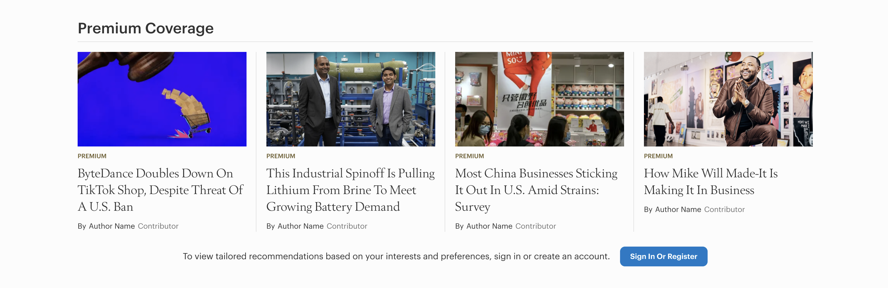
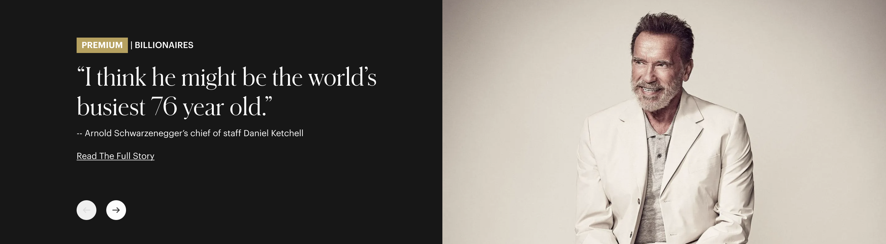

Forbes Homepage Redesign
Role: UX Designer / Researcher
Timeline: 12-14 weeks for discovery and design
Expected Delivery: Q4 2024/Q1 2025

Overview
The Forbes Homepage is the front door to the business. This is true for ~2.7M monthly visitors and our advertisers. It had been 6 years since the last Forbes homepage redesign and since then both the business and competitive landscape have changed dramatically. It's necessary to update the homepage of Forbes to accurately reflect its new value propositions and create deeper engagement with site visitors.
What is the problem/opportunity?
Problems:
- Search is the most engaged with by users on the homepage vs other pages, demonstrating that they’re not seeing what they came for at Forbes
- The average scroll depth in 2023 was 17.38% (Mobile: 14.28%; Desktop: 22.18%). That means most people are never seeing the full breadth of Forbes if we’re showcasing it in a long scroll.
- Not enough news slots for editorial
- Lack of tentpole content that Forbes is known for
- Too much emphasis on imagery that is stock art and/or portraits
- Not enough dynamic content
Opportunities:
- Increase the 'above the fold' value to our site visitors
- Drive deeper engagement
- Surface more entry-points into our lines of business broadly.
- Surface opportunities for a personalized experience for known/modeled users
- Increase points of entry to Membership and Newsletters.
- Establish a more accurate representation of the breadth of the Forbes Universe.
- Increase visibility for our list franchises
- Create a framework to support consumer-focused content areas like Vetted, Advisor, Careers
- Establish visibility for events
- Improve content, channel, section/ topic discoverability
- Strengthen brand identity and expression.
- Visibility for Channel/Section/Newsletter/List sponsorships at HP level
Competitive Analysis
We took a less traditional approach to a competitve analysis. We knew what opportunities we had and where we fell short, but because the overall user experience of our homepage needed to be changed, we took a look at the competitors to see how they handled certain things (flexible layouts, scroll depth etc.)
We had a lot of places to catch up (packaging stories and scroll depth issues), but we also had the ability to beat the competition with personalized content and leaning into dynamic content to engage the reader.

Brainstorm
Stakeholder interviews
We interviewed 40+ people across the organization including editorial, SEO, Sales, Forbes Vetted, Product Design, Growth, Ad operations, Live/Events, Engineering, and Executive Leadership.
“Not a fan of our homepage, does a disservice to our journalism”
“It’s a little insane that we don’t showcase lists on the homepage”
“Homepage looks like a frontpage of an aggregated newspaper, not a magazine.”
Interview summary
Content
Feature premium content, lists, and exclusive content that align with both the Forbes perspective and users' interests.
Business
Create conversion points to newsletters, UA memberships, and loyalty-focused content to drive daily engagement, highlight membership benefits, and increase content views per session.
Branding
Embody our mission of entrepreneurship, business, and investing through meaningful images and content.
Experience
Improve user personalization, balance with editorial curation, introduce interactive elements, and enhance site navigation.
Useberry Testing results
We gave 25 participants 15 seconds to take a look at Forbes.com. We told them to try to remember as much about their experience – from what they see to how they feel about the page.
What was this site?
72% (18) said it was Forbes
8% (2) said it was Business Insider
4% (1) said it was WSJ
16% (4) said it was none of the above.
What else do you remember from this webpage (images, text)?
A majority of responses said they remember the main image on the page and the breaking news bar. (the main story at the time was an exxon story and the image was a gas pump).
How much of the website were you able to browse?
People were either confused by the cookies pop up (they could click out of it), others were able to only scroll down a little bit, about 15% of the way.
What would you change about this page?
- Less ads
- Lots of text
- Boring to look at
- The cookies pop up
- The paywall
- Busy
What did you like about this page?
- Good hierarchy and image quality
- Use of images
- Feature article
- Trending topics
What did you dislike about this page?
- White space
- Boring looking
- Small text, a lot of words
- Not unique
- The cookies bar
- Cluttered
Tester quote
"My attention and focus were pulled back and forth a lot — the top bar with the breaking news and maybe newly updated news (?) were a bit far and also a bit small, and hard to make sense of since the overflows were cut off with "...". I felt like I saw a jumble of words and definitely not something I can parse in 15 seconds."
Solutions
Based on feedback across departments, we started to assess areas where we needed to improve.
More Personalization

Forbes has an account center that personalizes content for you. We felt from the beginning that the account center should just be an extension of what a subscribed or known user sees on our homepage. For users who have an account and/or have a subscription, that information is shown "below the fold." When a user is not signed in, we serve them premium content and let them know if you want personalized content, you need to create an account. This allows us to continue to push engagement, personalization, and offer another entry point into content for the users.
Users who are not signed in will see a different homepage than users who are signed in and/or have an account. The differences are not stark, but there is significantly less personalization and the MyForbes section just becomes premium content.
Updated user experience
Part of this redesign was to also make updates to the overall user experience. Currently on scroll, the Forbes homepage is monontous. We wanted to allow the editorial team to showcase stories in different layouts without blowing out images that don't warrant that much real estate. To increase value to each invidiual block, we also aligned our fonts as a brand. Instead of two fonts (a serif + san serif), we introduced a display font and a new serif font to complement it. This allowed us greater flexibility for our typographical treatment.
Bigger story promotional blocks

The current Forbes homepage only has two spots for the editorial team to manually curate content. This falls way short of the amount of content that Forbes produces on a daily basis. In addition to more editorial spots, we included multiple promotional options for Premium content, including the Forbes Lists. Each promotional block was designed to be a carousel if needed to include more content.
Get the reader engaged
We understand that scrolling and just seeing the same items over and over again can be daunting to a reader. Across the organization we saw an uptick in CTR on areas where users can engage. We wanted an area where users can still learn from the news of the day, but also interact with it.
Mocks and Deliverables

Finalized mocks and deliverables to come.